3D-Printed Aircraft (3DPAC)
Our senior project for the 3D-Printed Aircraft Competition (3DPAC): a fully 3D-printed competition glider judged on flight time. I led the aerodynamic and structural analysis, and the team placed 1st.
I owned the analysis backbone: the XFLR5 airfoil study, ASTM D638 tensile characterization of PLA and LW-PLA, the SolidWorks spar finite-element analysis and its physical verification, and the print-temperature study trading LW-PLA foaming (weight) against print quality.
The 3DPAC rules require every part to be 3D printed, allow 8 seconds of powered flight, and cap altitude with a 35-foot ceiling, with score set by total flight time. That makes it a glide-endurance problem: minimize drag and wing loading so the aircraft stays aloft as long as possible. The team weighed a flying-wing layout but moved to a conventional-tail glider, which was far more structurally efficient to print.
For the aerodynamics I ran an XFLR5 study of six airfoils (Clark Y, Eppler 325, MH45, MH60, NACA 25112, SD7037) at the low Reynolds number of the flight regime, around 100,000. The Clark Y gave the highest lift (Cl near 1.32 at 11 degrees), the gentlest stall, and a low pitching moment, so it became the wing section. A SimScale CFD run on the wing returned a lift-to-drag ratio of 17.1.
Because the airframe is printed in PLA, handbook properties do not apply, so I characterized the real material. Following ASTM D638 I modeled and printed dog-bone coupons and pulled them on an Instron: five samples each for longitudinal PLA, transverse PLA, and longitudinal LW-PLA. The curves show the strong anisotropy of FDM parts and quantify the penalty of the lightweight foaming filament.
I used those measured properties in a SolidWorks finite-element model of the spar, loaded with the same 11.77 N distributed force as the physical wing-loading rig. Peak principal stress at the root was 16 MPa (11.29 MPa just off the mesh singularity) against a 44.4 MPa ultimate strength, a factor of safety near 2.7, with a 35.18 mm tip deflection. A modal study put the first bending mode at 7.73 Hz and the torsional mode near 46 Hz, far enough apart to rule out flutter.
I then verified the model physically. A shake-table test put the first bending mode at 6.5 Hz versus 7.73 Hz in the FEA, a 15.6 percent error. A sandbag wing-loading test brought the wing to roughly twice the aircraft weight before it failed at the root.
Selecting LW-PLA for the skin also meant a print study: I printed parts across a range of nozzle temperatures to trade the filament's active foaming, which can roughly halve density, against print quality, since LW-PLA prints cleanest in zero-retraction spiral-vase mode.
- 1st place at the 3D-Printed Aircraft Competition (3DPAC)
- Six-airfoil XFLR5 study selected the Clark Y; CFD lift-to-drag of 17.1
- ASTM D638 tensile tests (n=5) characterized PLA and LW-PLA
- Spar FEA: factor of safety near 2.7, 35.18 mm tip deflection
- Flutter ruled out (7.73 Hz bending vs 46 Hz torsion)
- FEA verified against a shake-table test within 15.6 percent
| Material | Ultimate tensile (MPa) | Modulus E (GPa) |
|---|---|---|
| PLA (longitudinal) | 44.4 ± 7.7 | 1.02 ± 0.10 |
| PLA (transverse) | 32.0 ± 2.1 | 0.98 ± 0.07 |
| LW-PLA (longitudinal) | 4.1 ± 0.9 | 0.54 ± 0.05 |
| Quantity | Result |
|---|---|
| Peak principal stress (spar root) | 16 MPa |
| Factor of safety | ≈ 2.7 |
| Tip deflection (FEA) | 35.18 mm |
| 1st bending mode (FEA vs test) | 7.73 Hz vs 6.5 Hz · 15.6% |
| Applied load (g) | Tip deflection (mm) |
|---|---|
| 600 | 44 |
| 1200 | 120 |
| 1500 | 150 (root failure) |
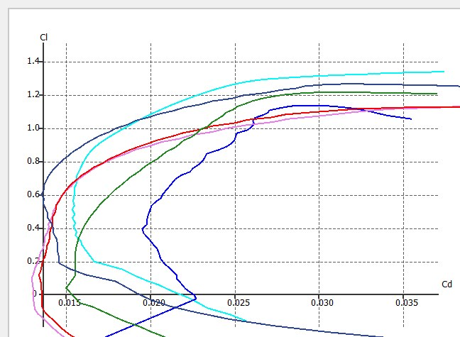
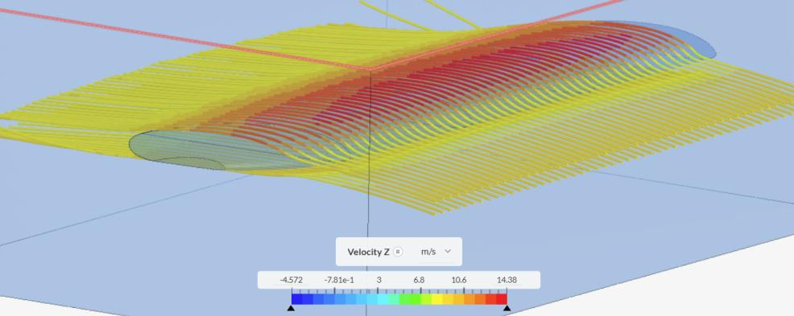
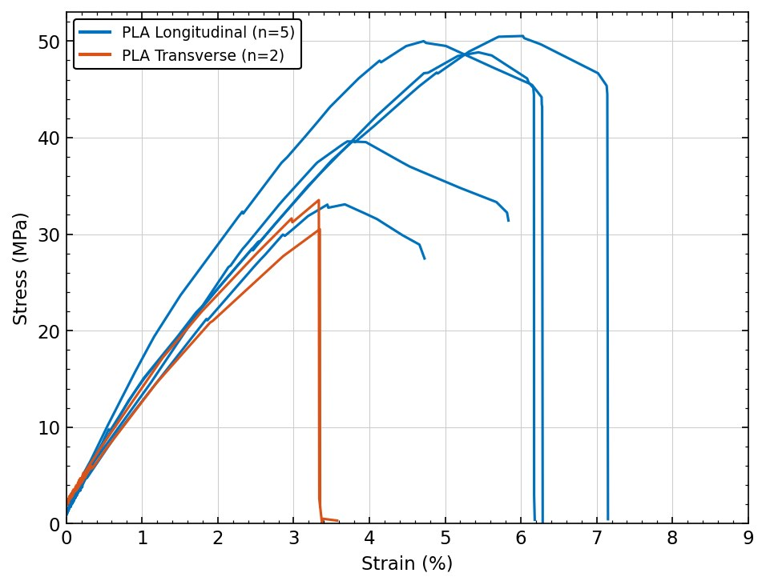
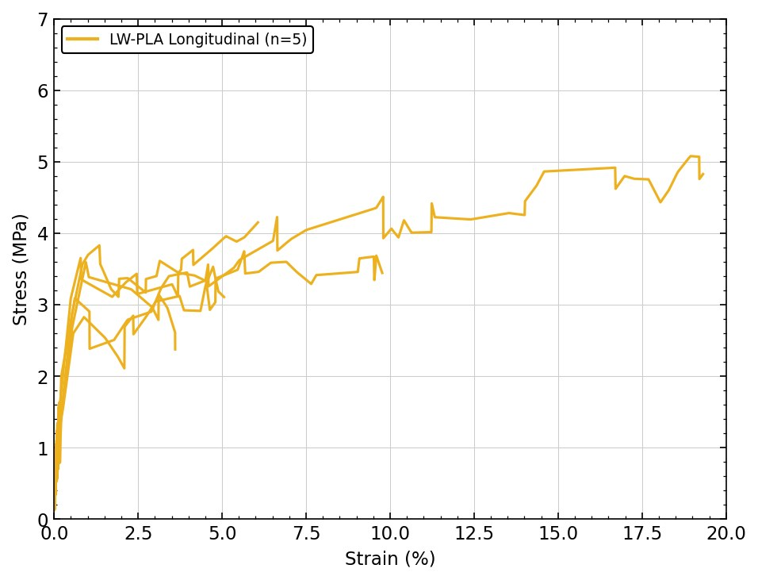
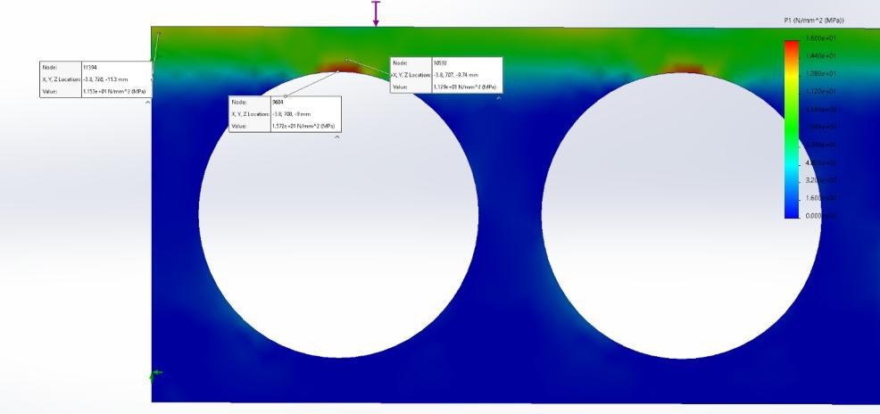
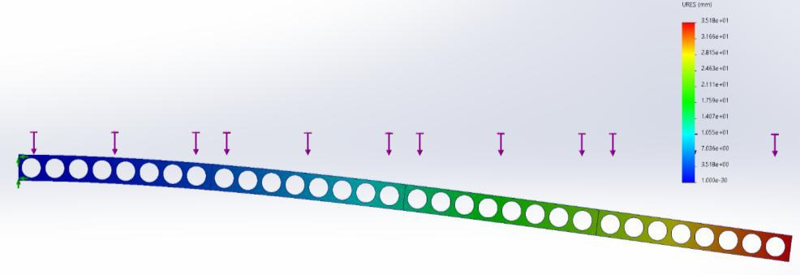
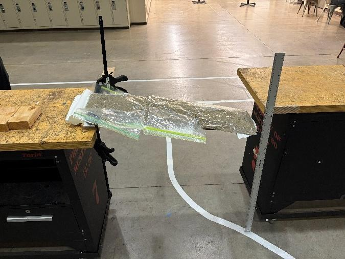
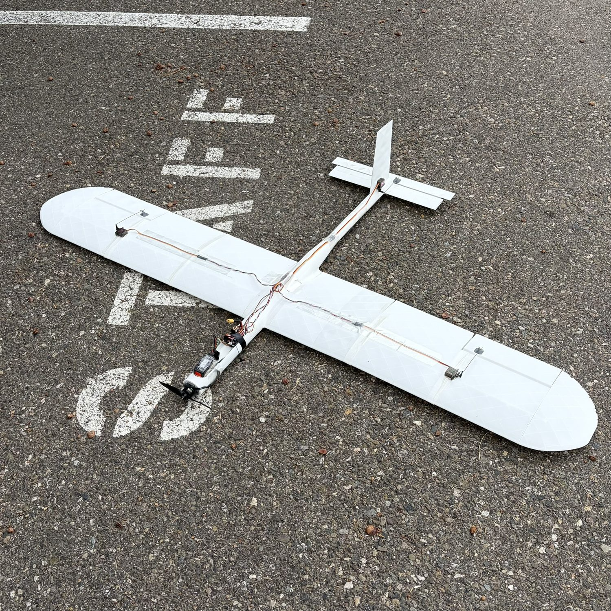
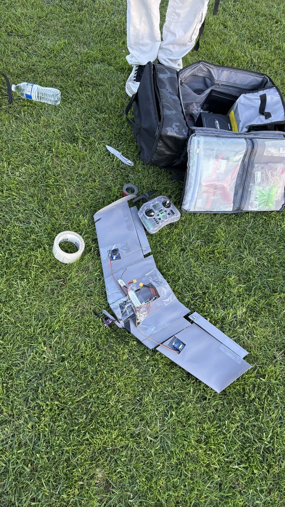
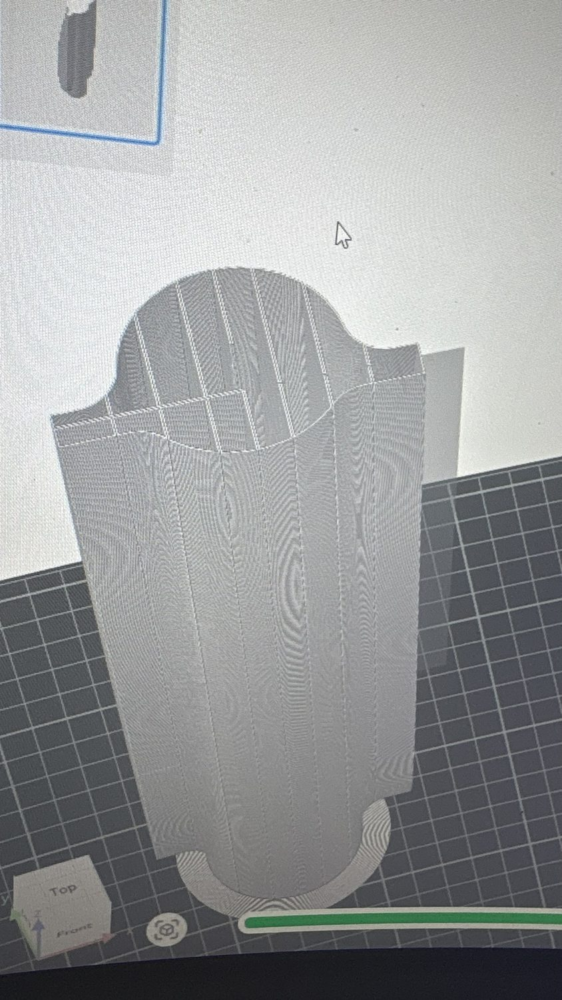
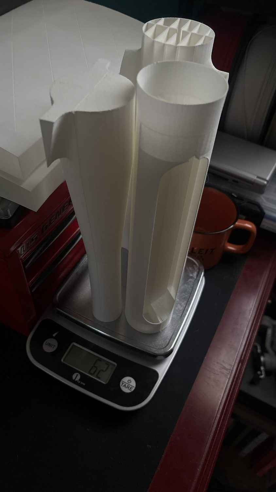
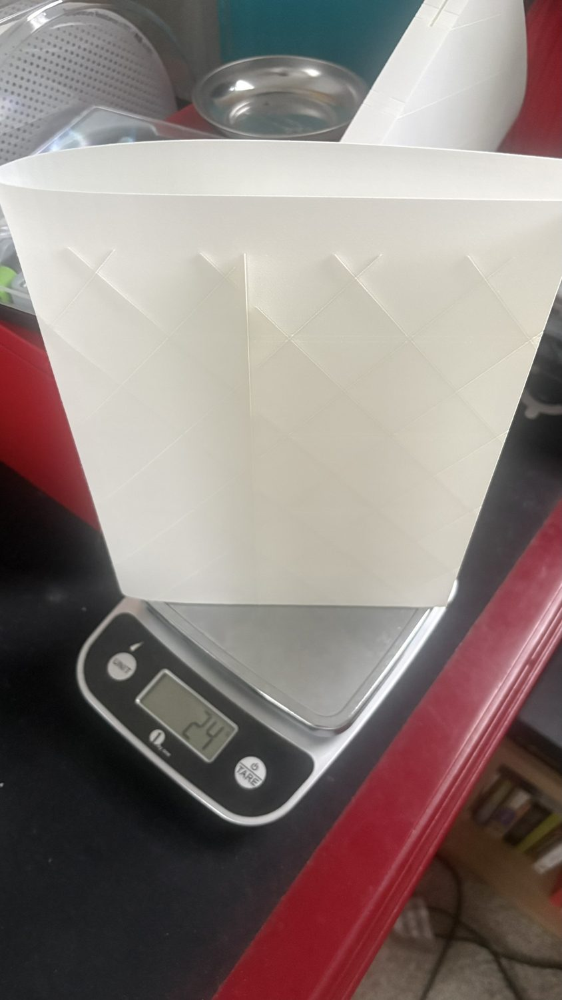
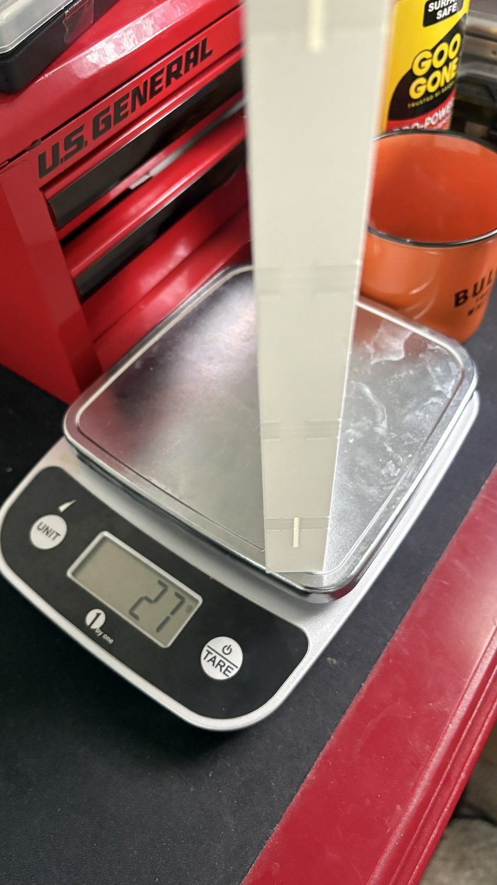
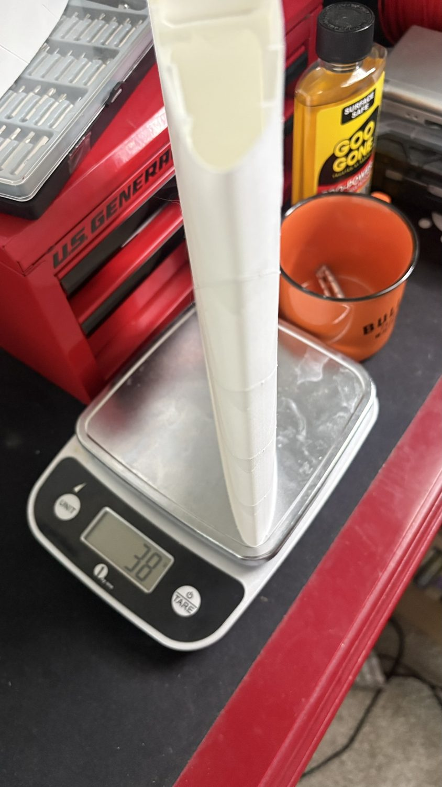
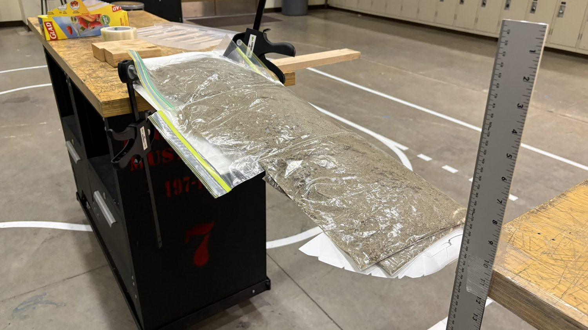
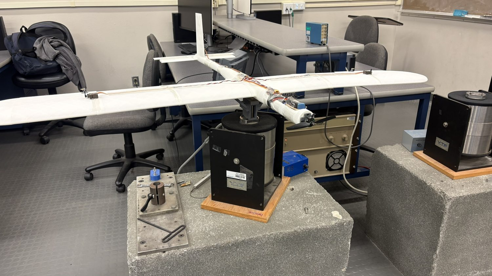